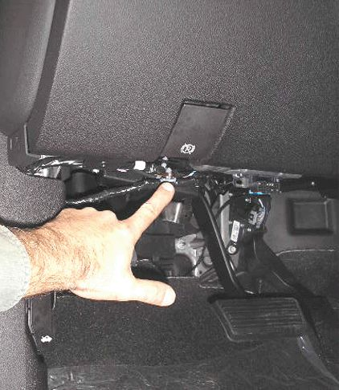
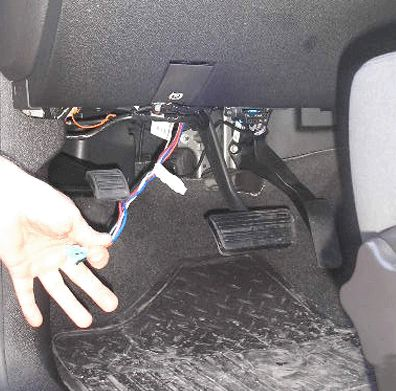
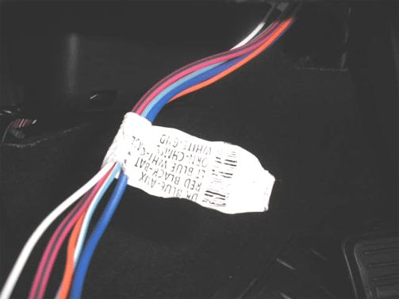
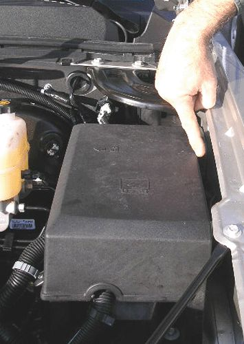
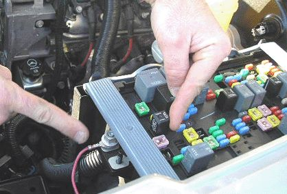
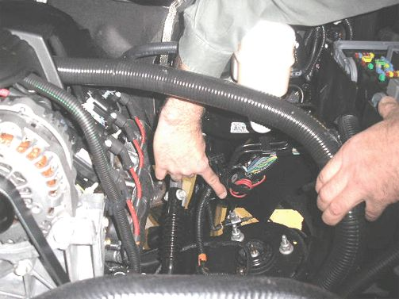
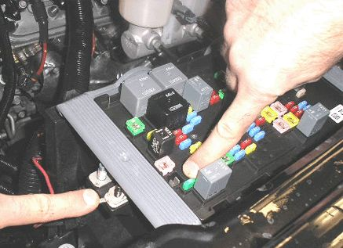

Brakes - Aftermarket Trailer Brake Controllers
INFORMATIONBulletin No.: 06-08-45-008D
Date: July 12, 2010
Subject: Information on Auxiliary Power Wire at Trailer and Installation of Aftermarket Trailer Brake Controller - Towing, Tow
Models:
2007-2011 Cadillac Escalade, Escalade ESV, Escalade EXT
2007-2011 Chevrolet Avalanche, Silverado, Suburban, Tahoe
2007-2011 GMC Sierra, Yukon, Yukon Denali, Yukon XL, Yukon Denali XL
2008-2011 HUMMER H2
Supercede:
This bulletin is being revised to add the 2011 model year and information about the orientation of the ringlet. Please discard Corporate Bulletin Number 06-08-45-008C (Section 08 - Body and Accessories).
Important
Installation of an electric brake controller and the wiring connections outlined in this bulletin are the responsibility of the dealership or customer. These repairs should never be charged to warranty. If you have any questions, please consult with your District Service Manager.
Some customers may have questions on how to connect an electric trailer brake controller or where the brake controller pigtail harness is located.
Starting with the new 2007 full-size utilities and pickups and 2008 HUMMER H2, there is no longer an electric trailer brake controller pigtail harness.
An aftermarket brake controller will need to be installed/connected to the blunt wires under the left side of the IP for vehicles built without JL1 - Integrated Brake Controller (full-size utilities and pickups). The following steps should be used to complete the installation.

1. Locate the trailer brake control circuits that are looped and taped to the main harness under the instrument panel.

2. Pull the trailering wire harness down.

3. Match the vehicle harness label circuit functions to the trailer brake controller jumper harness functions.
Important
The color or wires to be joined together may not match.
- Dark Blue Wire: switched power from controller to trailer brakes
- Red with Black Stripe: fused vehicle power to electrical brake controller
- Light Blue with White Stripe: Brake switch input to power electric brake controller
- White: ground
- Orange: CHMSL (Center High Mounted Stop Lamp) - not required with most systems

4. After completing the under dash connections to the electric brake controller, open the hood and locate the red wire that is taped to the harness between the underhood electrical center and the driver side front fender.
5. Break the tape on the red/black wire and pull it toward the front of vehicle.
6. Remove the lid from the electrical center.

Important
Ensure that the ringlets are not interfering with the UBEC cover.
7. Place the terminal on the larger of the two studs at the front of the electrical center and secure with an M8 nut. This is circuit #242 to stud #2, to power the aftermarket trailer brake controller.
Important
The fuse is already present in the vehicle to power the electrical trailer brake controller system.
Auxiliary Power (Applies to All LD & 07-09 HD's Only)

Circuit #742 for Auxiliary Power at the 7-way trailer connector is no longer connected by the GM Assembly Plant. If the customer desires auxiliary power at the trailer connector location (i.e. refrigeration, battery charger or interior light in the trailer), complete the following steps to connect circuit #742:
1. Locate the red/black wire, looped and taped to the chassis harness, below the brake master cylinder.
2. Break the tape and route the wire to the front of the underhood electrical center.

Important
Ensure that the ringlets are not interfering with the UBEC cover.
3. Place the terminal on the smaller of the two studs on the electrical center and secure with an M6 fastener. This is circuit #742 to stud #1 for auxiliary power to the 7-way trailer connector.
4. ONLY for vehicles without RPO TP2 - Auxiliary Battery, install a 40 amp fuse to power the circuit.
Important
For vehicles equipped with RPO TP2 - Devices powered by this fuse will drain the vehicle battery if left connected with the vehicle not running.
Warranty Information
This installation procedure is to be performed at the customer's request and at their expense. It is not a warranty repair and a claim should not be submitted for reimbursement.

Disclaimer